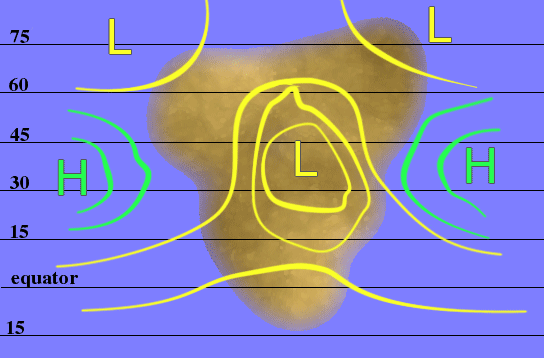

Geoff's Climate Cookbook
Geoff's homepage -> Creating planets -> ClimatesLast updated: 17 November 2008
With grateful thanks to krinnen, aka Gonzalo, who drew the pictures.
Contents
- Introduction
- Basic principles
- Ingredients
- Pressure-cooking
- Ventilate...
- ... add water...
- ... and place in the oven.
- Checklist
- The progression of climates
- Vegetables
- What if?
- Paper references
Introduction
This page is part of my essay about creating an Earthlike planet; it is intended to guide the creator of such a planet, after he or she has drawn a Map, through the process of working out the climates which characterise a particular area. As far as learning about the physical causes of climates goes, there's no substitute for a good textbook; however, textbooks tend to work backwards from observed phenomena to inducing the causes, whereas the typical conworlder needs to know the causes before he or she can deduce the observed phenomena - which is what this page is for.Please note that predicting climates is notoriously complicated and full of approximations, which is why there are no equations on this page and very little quantification. Ideally, I would be able to offer a program which would convert a Map of a planet and its physical data - such as axial inclination and distance from the sun - into a diagram showing the climate at every point of interest on the planet's surface; when I've written this program I will be able to retire for good on the money. In the meantime, the best I can do is talk in generalities without going into too much specific detail.
If you find this page useful, please let me know! As ever, I welcome corrections and suggestions for improvements.
Basic principles
Virtually everything important about climates can be deduced from the following physical principles, which are referred to in [square brackets]:
- All heating comes from the sun.
- Water heats and cools much more slowly than land; water thus acts as a stabilising effect on temperature.
- Hot air rises, cold air sinks; this is because air expands as it heats up and thus becomes less dense.
- Cold air gives rise to areas of high pressure, and hot air gives rise to areas of low pressure.
- Wind flows from areas of high pressure to areas of low pressure.
- Due to the Coriolis effect - the effect of the rotation of the earth on the flow of air - winds are deflected to the right in the northern hemisphere, and to the left in the southern.
- Rising air is conducive to the fall of precipitation, sinking air is not.
- Warm air carries more moisture than cold air.
Ingredients
You will need the following items before you can proceed any further.
- The axial inclination of your planet, which is 23.5 degrees for the Earth. The lines of latitude at this distance from the equator are known as the tropics, and those at the same distance from the poles are called the polar circles.
- Two identical copies of your Map, which should show the locations of as much land as you know about, the locations of the mountains, the lines of latitude in increments of no greater than fifteen degrees, and the tropics and polar circles. Label one copy "January" and the other "July".
- A transparent drawing medium which can be marked and erased without damaging the Map. In the physical world, this means several sheets of tracing paper or something made of clear plastic; on a computer, the equivalent is a drawing program which can handle layers, such as the GIMP.
- Something erasable with which to draw on the transparent medium; for tracing paper, coloured pencils (not pens) are suitable. You will need several colours.
- Something with which to erase the above, because you will make mistakes, and lots of them.
The following assumptions have been made:
- Your planet rotates from west to east, like the Earth.
- Your planet has a similar diameter and rotation period to the Earth. These quantities are respectively 12750 km and 24 hours.
For ease of reference, "January" and "July" refer respectively to the periods shortly after the sun reaches its furthest south and north respectively, and "April" and "October" to those just after it passes directly above the equator northwards and southwards respectively. The "just after" is necessary because the atmosphere acts as a drag on the heating and cooling processes; thus the hottest time of the year in the northern hemisphere is typically around mid-to-late July, some weeks after the summer solstice on 21 June.
This image lets you know when you should think about drawing something.
Pressure-cooking
The first stage consists of locating the large-scale areas of high and low pressure.
The default
The most important is the low-pressure belt called the inter-tropical convergence zone, or ITCZ, about which the temperature and pressure characteristics are theoretically symmetrical; this zone is caused by the rising of hot tropical air [3][4]. In April and October, the ITCZ lies more or less along the equator. In the northern summer, it moves northwards, reaching its farthest north in July; its most southerly position is attained in January. The range of movement on Earth is about 5 degrees of latitude over the oceans, and up to 40 degrees over land.If the surface of the planet was uniformly water, the distribution of these pressure belts and the prevailing winds would be as shown below, allowing for seasonal movements, which would be slight.

Adding land
The presence of land has two effects on the pressure distribution, both results of principles [2][3][4]: the pressure belts front bend northwards over land in July and southwards in January, and they are broken up by seasonal pressure-areas over the land. In general, the larger the area of land, the more noticeable the effect.In winter, the cooling of the land creates a high-pressure area over the interior, which merges with the high pressure area around the STHZ and leaves low-pressure systems over the oceans:

while in summer the land warms to create a low-pressure area, which joins up with the ITCZ and the PF, leaving high-pressure areas over the oceans:

In general, these pressure areas are located east of the longitudinal (east-west) middle of the continent, and are more intense when the surrounding land mass is larger. This is particularly noticeable with Asia; if the Eurasian landmass was reversed laterally, the pressure areas would be considerably less intense. Correspondingly, the pressure gradient is greater on east coasts than on west coasts; the precise difference depends on the shape of the continent.
Figures 7p-4 and 7p-5 on this page show how this works out for the Earth; the animation, one of many from here, is also here. Note particularly the considerable northward movement of the ITCZ in July over Africa and Asia, the continuous low-pressure zone over the Antarctic Ocean where there is no land to disrupt the southern PF, and the change in the air pressure over the interior of eastern Asia.
{kind=link}
You need to draw similar diagrams showing the pressure for January and July. Start by drawing with the ITCZ, STHZ, and PF, then locate the continental pressure-areas, and finally join them up as in the diagrams. Different colours for each stage are a good idea.
Ventilate...
Wind, in meteorological terms, is a flow of air from an area of high pressure to an area of low pressure [5]; the strength (speed) of the wind increases with the difference in pressure. Winds have two important effects on climate: they transport moisture, and - for our purposes - they are the principle cause of the ocean currents. Winds pick up moisture as they blow over the oceans and deposit it as rain or snow over land. Obviously, a wind can only carry a finite amount of moisture, so it wil become dry after blowing across a large area of land.
Winds
The winds we are interested in here are those which blow at the surface. Because of the Coriolis effect [6], the winds do not blow directly from high pressure to low pressure, but are deflected to blow, in the northern hemisphere, clockwise around high-pressure areas and anticlockwise around low-pressure areas. In the southern hemisphere the deflection is in the opposite direction. This deflection gives rise to the trade winds over the oceans; in the northern hemisphere they are south-westerlies in mid-latitudes and north-easterlies otherwise, and in the southern hemisphere north-westerlies and south-easterlies respectively.
The monsoon
On the east and south-east coasts of sufficently large land masses, pressure gradient will be sufficiently extreme that the resulting winds will override the prevailing trade winds; they will blow offshore into the ocean in winter, while the summer low-pressure area will pull in moisture-laden air from the ocean. This important seasonal reversal of the winds is, of course, the monsoon; it is prototypically observable in south-east Asia. The two pictures below show the general directions of the prevailing winds in winter (above) and summer (below). Note particularly the monsoon effect on the east coast.


Ocean currents
The formation and movement of the ocean currents is a complicated subject, much of which is not of interest here; for our purposes we are only concerned with currents on the surface of the oceans, which are caused wholly or mainly by the winds. The Coriolis effect comes into play again here, deflecting the currents from the path of the wind; the deflection is greatest (up to 45 degrees) at high latitudes and least (about 5 degrees) at the equator.

Now is a good time to add the prevailing winds and ocean currents to your Maps for both January and July. The currents are easy; don't forget that the winds will blow more or less in S-shaped double spirals.
... add water...
The annual distribution of the fall of precipitation in the form of rain and snow is one of the factors which characterise a particular climate. Rain and snow result from four processes:
- Moist winds blowing onto land, as previously mentioned.
- Orographic lifting of moisture-carrying winds as they blow over mountains and are forced to rise; the air cools as it rises, depositing its moisture on the windward side of the mountains [8].
- Convection due to the heating of the air. Again, the air cools as it rises and loses its moisture [8]. (Although the ITCZ passes over the Sahara Desert, it does not cause rainfall because of the dryness of the air; there is very little moisture for the rising air to pick up.)
- Frontal lifting along the polar front. Here the warm air from the STHZ is lifted up by the colder air from the poles, causing the low-pressure areas which weather forecasts warn about; further details are beyond the scope of this page.
| Factor | High precipitation | Low precipitation |
|---|---|---|
| Pressure | ITCZ, on or near the equator | STHZ |
| Mountains | Windward sides | Leeward sides, in rain-shadow |
| Prevailing winds | Onshore | Offshore or parallel |
| Coastal currents | Warm | Cold, especially in low latitudes |
| Location | West coasts subject to the PF, and some way inland | Interiors |
You should now be able to work out, for both January and July, the relative amounts of precipitation on your Map.
... and place in the oven.
The annual variation in temperature is the other characteristic feature of a climate. As a first approximation, the temperature is highest at the equator and decreases steadily towards the poles [1], subject to the following modifications.
Effect of the oceans
Variations in temperature are lowest along the coasts and highest in areas remote from maritime influence [2]. The variation increases with the distance from the oceans, and less so with distance from the west coast; the eastern regions of continental interiors thus experience the greatest variations in temperature. Incidentally, another consequence of [2] is that the hottest and coldest times of the year occur two to three weeks earlier in these regions than at the coasts.Effect of moisture
Heat is more readily transmitted through clear skies than cloudy skies; consequently, the less cloud an area receives, the greater will be its temperature variation during a single day. The higher the temperature, and the clearer the skies, the more moisture will be lost during the day through evaporation, which is the opposite of precipitation. The greatest amounts of evaporation are found in land areas influenced by the STHZ, where the high-pressure belt is not conducive to precipitation and thus cloud-formation [7]. These areas are thus the hottest of all during the day, and cold at night.You should now be able to work out, for both January and July, the relative levels of temperature on your Map.
Checklist
On both of your Maps you should now have indications of the following:
- The main pressure-belts (ITCZ, STHZ, and PF);
- The oceanic and continental areas of high and low pressure;
- The prevailing winds;
- The main ocean currents;
- Temperature and precipitation, on land at least.
| Temperature | Precipitation | Location, for checking | ||||
|---|---|---|---|---|---|---|
| Name | Köppen | Summer | Winter | Summer | Winter | latitude in degrees |
| Tropical rainforest | Af | Hot | Hot | Wet | Wet | 0-10 |
| Tropical monsoon | Am | Hot | Warm | Very wet | Short and dry | 5-15; east and south-east coasts only |
| Savannah | Aw | Hot | Warm | Wet | Long and dry | 5-15 |
| Hot desert | BWh | Very hot | Warm | Dry | Dry | 10-30, especially on west coasts with cold currents |
| Hot steppe | BSh | Hot | Warm | Low to dry | Low to dry | 10-35; typically next to deserts |
| Cold desert | BWk | Hot | Cold | Dry | Dry | Interiors, rain shadow |
| Cold steppe | BSk | Warm | Cold | Low to dry | Low to dry | Interiors, rain shadow |
| Maritime east coast | Cfa | Hot | Warm to mild | Wet | Moderate | 20-40; east coasts only |
| Maritime west coast | Cfb, Cfc | Warm to mild | Cool to cold | Wet | Wet | 40-60; west coasts only |
| Mediterranean | Csa, Csb | Hot | Mild | Dry | Moderate | 30-45, west coasts only |
| Temperate monsoon | Cwa, Cwb | Hot | Mild to cold | Wet | Dry | 20-40; east coasts only |
| Laurentian | Dfa, Dfb | Warm to mild | Cold | Moderate | Low | 40-60; not on west coasts |
| Subarctic | Dfc, Dfd | Mild to cold | Very cold | Moderate | Very low | 60-80; not on west coasts |
| Manchurian | Dwa, Dwb | Warm to mild | Cold | Moderate | Dry | 40-50; east coasts only |
| Subarctic east | Dwc, Dwd | Mild to cold | Very cold | Moderate | Dry | 45-70; east coasts only |
| Tundra | ET | Cold | Very cold | Low | Dry | 60-80 |
| Icecap | EF | Very cold | Very cold | Low | Dry | 75+ |
- Steppe and desert climates experience large diurnal variations in temperature, which means cold nights.
- In the subarctic and tundra climates, winters are long, dark, and cold, and the other seasons are short.
- Some sources mention Köppen climate types As and Ds, which are like Aw and Dw but with the dry season in summer rather than winter. I don't know what causes these particular climates; they are very rare anyway and can probably be safely ignored.
One final factor to consider is altitude, also known as elevation. In general, temperature decreases with altitude - the higher you are above sea level, the colder it gets - so that a region which would have one type of climate at sea level will have a colder climate at higher elevations. For example, much of south-central Africa around Zambia and Zimbabwe would have a savannah climate at sea level, but because of the elevation has temperate monsoon instead.
The progression of climates
Moving from the equator to the poles, the climates appear in the well-defined sequences described below. It is instructive to compare these found on the Earth.The climates appear on the west coast in the following order:
- Tropical rainforest.
- Savannah.
- Hot steppe, with dry winters. The boundary between this and the savannah is the line where evaporation equals precipitation.
- Hot desert, due to the influence of the cold current, which is also responsible for coastal fog on the west coasts of desert climates.
- Hot steppe again, this time with dry summers.
- Mediterranean. The boundary between this and the steppe is, again, the line where evaporation equals precipitation. Coastal fog is often experienced in summer.
- Maritime west coast, cooling steadily poleward. These climates are warmed by the ocean currents.
- Tundra.
- Icecap.
Continental interiors, and areas in the rain-shadows of north-south mountain ranges, will experience dry versions of the climates to the west. The equivalent order of climates would be:
- Tropical rainforest or savannah.
- Hot steppe, with dry winters.
- Hot desert.
- Hot steppe.
- Cold desert in areas far from the west coast.
- Cold steppe.
- Laurentian in its colder incarnations. Round about here, the colder temperatures reduce evaporation to the point that it no longer exceeds precipitation.
- Subarctic.
- Tundra.
- Icecap.
On the east coast, there are two cases to consider, depending on whether the land mass is large enough to generate monsoons. East coasts not subject to the monsoon will feature the following climates:
- Tropical rainforest, or savannah if the land is high enough, as in east Africa.
- Maritime east coast. The difference between this and the preceding is largely one of winter temperatures.
- Laurentian, becoming steadily colder polewards.
- Subarctic.
- Tundra.
- Icecap.
East coasts of continents where there is a monsoon will feature the following climates:
- Tropical rainforest, which may be absent.
- Tropical monsoon, prototypically.
- Temperate monsoon. This is the same as tropical monsoon, but with colder winters; equivalently, it is equivalent to maritime east coast with dry winters.
- Manchurian. Effectively a laurentian climate with dry winters.
- Subarctic east. Similarly, this is the subarctic climate with dry winters.
- Tundra.
- Icecap.
Vegetables
One of the reasons for being interested in climate is to discover the types of vegetation which grow in a particular region. This section describes, in general terms, the vegetation types asociated with the climate types. More detail, with information about the fauna, can be found with a Google for "biomes"; for example Introduction to biomes, Habitats and biomes, Blue Planet Biomes, World Biomes, and - the most detailed - Köppen biomes.The vegetation of the icecap climate is the simplest to describe: there is none at all, because the temperature is below freezing for most or all of the year. Tundra climates similarly discourage growth for most of the year, but some vegetation grows in the short summer, typically small mosses, lichens, and alpine plants. Equatorward, where the climate borders subarctic, stunted trees may grow.
The characteristic vegetation of the subarctic, subarctic east, and manchurian climates is extensive coniferous forest known as taiga, typically made up of spruce, fir, scots pine, and larch; larch is commonest in the coldest and driest climates, and the deciduous birch, aspen, and alder are also found in the lower altitudes. Despite the low amounts of precipitation, even lower evaporation means that enough moisture is retained to allow the growth of vegetation. Conifers have needle-like leaves to preserve water and strong branches to endure the snow which lies on them for much of the winter.
A mixture of coniferous forests and broadleaved forests characterises the maritime and laurientian climates; the dominant type of forest depends on the proportion of the year in which the temperature is less than 5.5 degrees centigrade (this is 42 degrees Fahrenheit, interestingly). The progression is from evergreen broadleaved through deciduous broadleaved to coniferous as the winters become colder; thus if the temperature is always above 5.5 degrees (i.e. the proportion is zero), the forest wil be mainly or entirely evergreen broadleafed. The dominant type of tree will be coniferous if the proportion is greater than 50%, and deciduous broadleafed if it is between 0% and 50%.
Mediterranean vegetation needs to guard against losing water in the dry summers, and tends towards scrub made of small plants with hard leaves, similar to the chaparral familar from many Western movies. The trees are either coniferous or evergreens with small waxy leaves and thick bark; evergreen oak, pine, cedar, and above all olive are typical mediterranean trees.
Too little moisture is retained in the steppes to allow trees to grow; the principal vegetation is thus extensive grassland, including many cereals. Grassland is also characteristic of the savannah, in which the vegetation dies back in the dry winter but grows vigorously in the summer, reaching heights of up to six feet. Trees in the savannah tend to be isolated and adapted to retain water for the long dry season, such as the baobab. The vegetation of the deserts is scanty, patchy, and specially adapted to the conditions; plants tend to be fleshy and leafless, such as the cactus.
The characteristic vegetation of the tropical rainforest climate is, of course, tropical rainforest: lush, abundant forests with massive trees and an enormous variety of other plants which grow all year round in the ever-present moisture, The large amounts of precipitation leach nutrients from the soil, and as a result the trees have shallow roots and large buttresses at the bases of their trunks. Monsoon vegetation is intermediate between rainforest and savannah: the forests are less dense, many varieties of tree become deciduous to cope with the dry winters, roots are longer, and the plant types are less diverse.
What if?
The principles described up to now should work well enough for an Earthlike planet. This section is intended as a catch-all for questions not otherwise answered.
... my planet rotates in the opposite direction?
Easy - just interchange "east" and "west".... my planet rotates very fast?
The three bands of prevailing winds in each hemisphere are due to the speed of the planet's rotation. Above a certain speed of rotation, for which I am unable to provide figures, the three will become five (they cannot become four), and in between the STHZ and PF there will appear another belt each of of low pressure and high pressure. These will still move north and south with the sun, and the principles can be applied as before.... my planet has a small axial inclination?
The north-south movement of the pressure belts will be correspondingly less, and smaller areas will be subject to the climates which undergo seasonal changes; annual temperature ranges will also be less. The tropical rainforest, maritime, hot desert, and icecap climates will be favoured.... my planet has a large axial inclination?
The reverse of the preceding; season effects will be increased, and the areas subject to the tropical rainforest, maritime, hot desert, and icecap climates will be less. A large enough inclination - about 40 degrees - will eliminate these climates altogether.Paper references
- Meteorology and Climatology, fourth edition (revised), E.S. Gates; Harrap (London) 1972. I rescued this from a wheelie-bin on Raeburn Place one evening.
- Earth Science, fourth edition; Tarbuck & Lutgens, Merrill (Columbus, OH) 1985.
- The Climate Revealed, by the unenviably-named William J. Burroughs, Mitchell Beazely 1999.
- The Edinburgh World Atlas, John Bartholomew & Son Ltd, 1970. Has useful diagrams of the relevant climatic information.